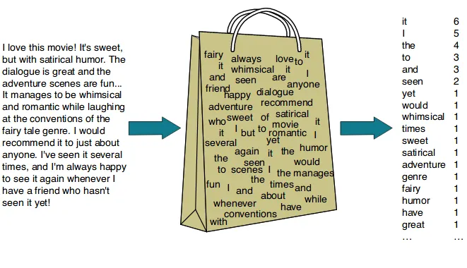

Understanding Term & Document Frequency
When performing NLP tasks, including sentiment analysis, we often use a text modeling technique called Bag of Words (BoW) to extract features from documents. In this approach, a document is represented as a “bag” of its words, focusing only on how many times each word appears. The order of the words and their grammatical structure are ignored; what matters is the frequency of each term in the document, as depicted in the figure below:

The Bag of Words model is a simple and useful way to turn text into numbers, but it has a limitation since it treats all words with the same frequency as equally important, even if some are far more informative than others. For example, in a collection of product reviews, words like “good” or “product” might appear frequently in almost every review, but they don’t help us distinguish one review from another.
This is where TF-IDF (Term Frequency–Inverse Document Frequency) comes in. It builds on Bag of Words by keeping track of term frequencies, but also scaling them down for words that are common across the whole dataset, while boosting words that are more unique and meaningful. In short, it captures word importance while also handling common words.
Think of it like chatting with friends on campus. You might hear “Hey,” “What’s up,” and “See you later” dozens of times a day. These phrases are so common they don’t tell you who is talking or what the conversation is really about. But if someone says, “The capstone presentation has been postponed!”; that’s rare, specific, and meaningful.
In documents, very frequent words act like this everyday chatter which are part of the background noise, but not what makes the exchange noteworthy. If we gave them too much weight, we’d miss the truly important content.
Thus, the TF-IDF technique aids to noise reduction along with stop word removal, but by using continuous weighting instead of simply deleting words.
TF measures how often a word appears in a given document (in this case, an individual X post).
IDF measures how rare that word is across all documents (in this case, X posts).
By multiplying them, TF-IDF highlights words that are both frequent in a specific document and uncommon elsewhere, helping us spot unique patterns and cluster similar posts. For short messages such as X posts and tweets, the IDF component often does most of the work.
In short, TF-IDF filters out the constant buzz so the unique and important messages stand out. It tells us how important a word is in a document relative to the entire collection (the corpus).
Back to our campus example: if you collected students’ feedback on summer programs, words like students, campus, event, and university might dominate your dataset. TF-IDF would lower their weight and boost rarer, more distinctive terms like hackathon, multicultural, or bootcamp.
If you want to dive deeper into the math that happens under the hood, this video explains the equations e algorithms behind TF-IDF.
Now, let’s get back to our worksheet and see how implementing this final preprocessing technique will play out with our dataset.
Interpreting the table output: (review and use examples from the dataset)
| Column | Meaning |
|---|---|
document |
The identifier of the document. In your case, it’s 1 for all rows, meaning all words are from the same “document” (probably your entire season 1 dataset). |
word |
The token (word) in the document. |
n |
The raw count of how many times that word appears in the document. For example, severance appears 1802 times. |
tf |
Term frequency: the proportion of the word in the document. Calculated as n / total words in the document. For instance, 0.0876 for severance means ~8.76% of all words are “severance”. |
idf |
Inverse document frequency: measures how unique the word is across all documents. Formula: log(total_docs / docs_containing_word). Here it’s 0 because you only have one document, so all words appear in every document, making IDF zero. |
tf_idf |
TF-IDF score: tf * idf. It’s meant to highlight words that are frequent in a document but rare across documents. Here it’s 0 for all words because IDF is 0. |
While TF-IDF plays a key role in text analysis, it is often less effective for sentiment analysis at the sentence level because it primarily captures term importance rather than the nuanced emotional or contextual meaning of words. TF-IDF is more suitable for tasks such as document classification, keyword extraction, or generating word clouds. For this reason, we will not be using TF-IDF in this workshop.”